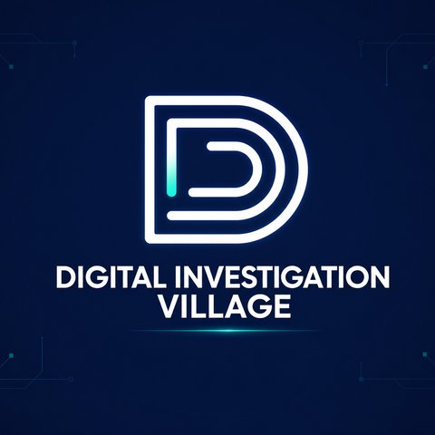

Investigação digital · OSINT · evidência digital
A investigação digital tem sala própria na conferência.
A Digital Investigation Village é a trilha que leva investigação digital, inteligência de fontes abertas, evidência digital e DFIR para dentro dos eventos de segurança da informação, a partir da perspectiva brasileira.
- 6edições desde 2024
- 56palestras apresentadas
- 3cidades: São Paulo, Brasília e Rio
- 3conferências parceiras: H2HC, BSides e 307c
Conceito
Ferramentas, método e prova, na mesma sala
A Village se propõe a discutir procedimentos e ferramentas de investigação digital com o olhar de quem investiga no Brasil: policiais, peritos, promotores, analistas de inteligência, pesquisadores e profissionais de resposta a incidentes.
Cada edição reúne uma sequência de palestras técnicas, com moderação, e termina com uma conversa sobre o que muda na prática. O fio condutor é sempre o mesmo: como sair do rastro e chegar à prova, com método, ética e respeito à proteção de dados.
- 01Ferramentas e metodologiasColeta, análise, automação e IA aplicada à investigação.
- 02OSINT e suas disciplinasSOCMINT, IMINT, GEOINT, FININT e afins.
- 03Aspectos normativos e provaBase legal, cadeia de custódia e validade probatória.
- 04Investigação técnicaInfiltração e hacking investigativo, infraestrutura e atribuição.
- 05Dispositivos móveis e IoTArtefatos, perícia e ambientes industriais.
- 06Investigação e proteção de dadosLGPD, ética e os limites da coleta.
Próxima Village
307c · Temporary Security Conference
Sábado, 05/12/2026, em São Paulo (Rua Marquês de Paranaguá, 111, Consolação, perto do metrô Higienópolis-Mackenzie). Sessão única, com seis palestras e uma síntese final. Entrada gratuita, com inscrição pelo site da conferência.
- Grounding check: como pegar a alucinação do LLM antes que ela vire relatórioEduardo Santos Arcos · eixo verificação
- Crimes digitais: ferramentas de investigação no BrasilFilipe de Morais · eixo base legal
- Almoço
- Raspagem de dados no Instagram, com F12, IA e Google ColabWillian Wistuba · eixo coleta
- Preservação forense de evidências em incidente cibernéticoLuis Fernando Barbosa · eixo custódia
- Intervalo
- Quem assina não manda: descapitalizando o crime com fontes abertasBárbara Bond · eixo prova
- The Devil’s Gate: when the industrial remote access became a starting point of cyber attackAndré Vianna · eixo fronteira
- Do rastro à prova: síntese da VillageModeração de Emerson Wendt, com os seis palestrantes do dia
Edições
Por onde a Village já passou
Programação de cada edição, com palestrantes e títulos como divulgados. Toque numa edição para ver a grade.
nov 2026BSides Brasília 2026CEUB, Asa Norte · 7 palestras
- Oops, You Leaked It!João D. (jd)
- Ecossistemas extremistas: OSINT em Discord e TelegramPaulo Roberto Medeiros Viana
- Anatomy of ClickFix: understanding and neutralizing the threat in healthcareEric Fraga
- A ilusão da caixa-preta: riscos de LLMs, prompt injection e vazamentos de dados sob a ótica da LGPDBruno Franco Toledo
- A jornada de alto risco da evidência digitalMarcelo Carrion
- Pegadas digitais: como pequenos rastros fecharam um caso cibernéticoLuiz Lyra
- Cuidados com a rede: importância da OPSEC no contexto da investigação criminalWagner Lucena
Digital Investigation & OSINT Village, 14/11/2026. Curadoria: Emerson Wendt. Colaboração: Luiz Lyra.
mai 2026BSides São Paulo 20268 palestras
- Hackeando pessoas, invadindo instituições: um ataque real a um banco brasileiroLenon Stelman
- Inteligência artificial e investigação policialThiago Chinellato
- Metadados: o campo de batalha invisívelAndré Vianna
- OSINT probatório: cadeia de custódia da investigação em fontes abertasPedro Borges Mourão
- Whois behind the attack? Pivoting passivo para rastrear infraestrutura adversáriaEvelyse Akemy
- Fingerprinting, DPI e OPSEC: por que seu túnel não é invisívelVinicius Vieira
- Today is a good dayReinaldo Bispo (Corvo)
- Crime as a service: a cadeia produtiva dos golpes digitais globaisKerlly Santos e Bárbara Bond
Curadoria: Emerson Wendt. Colaboração: Willian Wistuba.
mar 2026BSides Rio de Janeiro 20265 palestras
- Resposta a incidentes de vazamento de dados: menos ruído e mais informaçãoThiago Castro
- Quando a nuvem vira vitrine: exposição de dados em buckets públicosBruno Lobo
- Experiências na análise de OSINT usando a técnica de avaliação de dados (Admiralty System)César Montenegro Justo
- Engenharia do anonimato: infraestrutura segura para operações de investigação digital e hacking éticoEdson Ferreira
- Ambientes descartáveis na prática: containers, OPSEC e segurança com Kasm WorkspacesMarco Combat
Curadoria e moderação: Emerson Wendt.
dez 2025307 Conference 2025São Paulo · 8 palestras
- Insiders: o novo desafio da investigaçãoThiago Chinellato
- Hunting the intruder: detecting and mitigating rogue master devices in industrial control systemsAndré Vianna
- Fazendo OSINT em perfis no X/Twitter com F12, IA e TampermonkeyWillian Wistuba
- IA, dados abertos e investigação digitalEmerson Wendt
- Investigação de criptoativosIsrael Isaac Silva Guarnieri
- Follow the money: por trás do ataque ao PIX, blockchain e shadow financePaulo Daniel Vieira de Abreu Junior
- Hackeando pessoas, invadindo instituiçõesLenon Stelman
- Anonimato a baixo custo: montando uma cadeia de ataque com serviços legítimosSérgio Costa
13/12/2025. Curadoria: Emerson Wendt. Colaboração: Willian Wistuba.
nov 2025BSides Brasília 20259 palestras
- Telegram analyticsRamiro de Assis Silveira
- Experiências na análise de OSINT usando a técnica de avaliação de dados (Admiralty System)Cesar Montenegro Justo
- Pivotando de um e-mail: a descoberta de identidades no WhatsAppEdson Araujo Paulino Junior
- Hackers, infostealers e o mercado de credenciaisHigo Aguiar dos Reis Martins
- Hackeando pessoas, invadindo instituições: um ataque real a um banco brasileiroLenon Stelman
- Raspagem de sites & CyberChef: potencialidades e limitaçõesSérgio Luís Fava
- Pessoa de interesseMarcelo Martins Carrion
- Investigação e caça a infostealers: desvendando o roubo de dados digitaisFilipi Pires
- OSINT e fraudes eletrônicasAlesandro Gonçalves Barreto
Trilha Digital Investigation & OSINT, 1º/11/2025.
dez 2024H2HC 2024São Paulo · 19 palestras · a primeira Village
- Esquema de pirâmide em day tradeMariana do Carmo Gouveia
- DCCIBER [PCSP]: metodologia e investigação na práticaThiago Cirino de Moura Chinellato
- Darknets + LLM open source: potencializando nossa pesquisa da dark web com IAFrancisco Jesus Rodriguez Montero
- Collection and analysis forensics artefacts in incident response of ICSAndré Vianna
- Profissão “investigador digital”: competências necessárias em tempos atuaisAlesandro Gonçalves Barreto
- A consequência da não preservação adequada de evidênciasCleber de Lima Junior
- Parece real mas não é: a importância da verificação de dados no processo de hunting investigativoReinaldo Bispo (Corvo)
- Engenharia reversa em ICS/SCADA: os segredos ocultosJoel Leandro Rossi
- Investigação digital em redes sociais para mapeamento de padrões comportamentais do alvoDeivison Lourenço
- OSINT4Good: ferramentas e estratégias para causas sociaisDaniel Donda
- Structural insights: PDF analysis for detecting and defending against threatsFilipi Pires
- Potencializando ferramentas OSINT com IALucas Antoniacci
- Como provar que algo aconteceu na internet?Alexandre Munhoz
- Fraude milionária usando dispositivos de rede: uma década de ataques e investigaçõesWeslley Shaimon
- O uso de OSINT e engenharia social para descobrimento de operadores de serviços pirataGuilherme Afonso
- OsintHuntersBrasil: descobrindo informações em tempo real com fontes abertasEmerson Wendt e Willian Wistuba
- Ganhando independência na deep webPaloma Saldanha
- Data analytics in TelegramRamiro de Assis Silveira
- Quebrando o OPSEC investigativo com OSINT e engenharia socialLucas Moreira
Dois dias de programação. Curadoria: Emerson Wendt. Colaboração: Willian Wistuba e Lucas Antoniacci.
Curadoria
Quem monta a grade
A curadoria parte das chamadas de trabalhos de cada conferência: as propostas são lidas, agrupadas por eixo e ordenadas para que a sala conte uma história, do caso real ao método e do método à prova.
A curadoria da Village é de Emerson Wendt, delegado de polícia, professor e pesquisador em investigação digital. Em cada edição, a organização conta com colaboradores que conhecem o tema e a cena local, como Willian Wistuba na H2HC, na 307 e na BSides São Paulo, Lucas Antoniacci na H2HC e Luiz Lyra em Brasília.
Conferências que já receberam a Village
- H2HC
- BSides Brasília
- BSides Rio de Janeiro
- BSides São Paulo
- 307c · Temporary Security Conference
A Village faz parte da mesma rede do Osint & Cachaça, os encontros presenciais de OSINT pelo Brasil. Quando dá, a conversa da sala continua no balcão.
Palestre na Village
Tem um caso, uma técnica ou uma ferramenta para mostrar?
As grades são montadas a partir das chamadas de cada conferência, mas a Village mantém uma lista própria de interessados. Envie sua proposta: avisamos quando abrir a próxima chamada e a curadoria pode convidar você diretamente.
- Palestras de 30 a 50 minutos, com tempo para perguntas.
- Casos reais são bem-vindos, sem dados sensíveis de vítimas ou investigados.
- Profissionais de todas as áreas: segurança pública, Ministério Público, perícia, setor privado e academia.

Comunidade
Acompanhe a Village
Chamadas de trabalhos, grades, cards dos palestrantes e registros de cada edição.